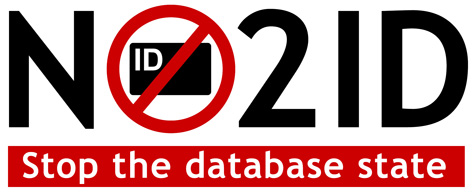

The British government wants to introduce an ID card scheme. It worries me, and I’d like to explain why. To do this, I need to talk about computers.
I work with computers, so I know their power and — like Robert Oppenheimer — I look to the damage our technology might do even as I play my role in inventing it. Computers change society. They are a disruptive and transformative technology.
Do not assume that tomorrow will be like today except that the women will be wearing skintight silver jumpsuits. There will be more to it than that.
Difference between bank and ID card
An ID card is like bank card (a credit or debit card). It is just a piece of plastic with a computer chip on it. But it’s attached to a database. The database makes all the difference.
A database is a computer system that stores information and can cross-reference it in microseconds. The power of databases is dramatised in every 1970s film with a big white room with lots of machines with lights and spinning tape.
The chip on a bank card identifies you to a database in which your personal information is stored. Thanks to the telephone and the internet, this communication can happen instantly or nearly so (for example at an ATM or in the supermarket). You do not even need the card; think of shopping online. What is important is to identify yourself to the database, which can then authorise the transaction.
In the case of a bank card, the immediately pertinent item in the database is your bank balance. But, the database also remembers all the transactions you have ever made. If you make enough purchases on a bank card (and naturally the banks encourage that) then this can become a partial but representative record of your life; where you went, what you bought — even who you were with at the time can be deduced, if you split the bill.
The ID card is different from your bank card in two significant ways. Let’s look at a bank card again:
- You own your bank statements
You expect them to be kept secret and not shared or cross-referenced. Your bank details are yours. They are private. They belong to you.
- You can opt out
You can choose to use cash, or use more than one card. If your bank told you that you could only use one card, or that if you took their card then they would no longer allow you to use cash, then you’d simply switch to another bank. The bank is not a monopoly.
Now compare this with ID cards:
- You don’t own your information
The government will also own the ID card itself, and that card can be taken away (just like a passport).
- You can’t opt out
It’s a government scheme. Short of emigrating, you can’t switch provider. Indeed, legislation can make it illegal not to use it. It is, after all, an identity card.
You want to buy alcohol? Prove you’re over 18 (entry in database). You want to pay by bank card? Show us your ID card to guarantee the transaction (entry in database). You want to buy insurance? Entry in database. You want to get an Oyster card and travel on a bus? Entry in database. And so on.
On the value of information
It’s not a new observation that information has value to traders and spies, but Google AdWords have done a lot to show us how it has immediate economic value.
When you do an internet search you are giving the search engine information about what you are 'looking at'. The search is not free; it is a trade. You find what you want, which has value to you — and in return you give away information about what you are looking for, and this has value too. By selling clicks on adverts, Google converts this value into money. You get the search, Google gets the money, and the advertiser gets to promote themselves. It’s very elegant.
Suppose one click on a Google advertisment costs the advertiser 1 penny (in practice, it may be considerably more), so just for the sake of a quick calculation let’s fix that as the monetary value of a given scrap of information, to somebody. If you have a million such scraps, that’s worth at least 100,000 pounds.
If anything, this is an underestimate. Unlike pennies, you can cross-reference information. A database that is twice as large, is four times as valuable. Now multiply this over a lifetime and over the population of an entire nation. How much is this worth?
Like your bank details, your private life is yours. It is private. It belongs to you. It is valuable. Thanks to computers you enjoy the option to give away parts of your privacy in return for money, goods, or services — but it should not just be confiscated from you.
The government will sell the information, and it will do something worse too: it will give access to every civil servant and (once this information is stolen, and it will be stolen, because it is valuable) to criminals. I shan’t say which of the two is worse: at least criminals may avoid doing anything too outrageous, which might draw attention to their illegal activities.
Information is power. I see parallels between the current ID card scheme and the military-industrial complex which Eisenhower warned us about back in 1961. He spoke of
an informal and changing coalition of groups with vested psychological, moral, and material interests in the continuous development and maintenance of high levels of weaponry, in preservation of colonial markets and in military-strategic conceptions of internal affairs.
He was talking about the effects on society of people accumulating money and power by making bombs. Now, we’re talking about people making ID cards: weapons, money, information. If the quantities are large enough they are all the same. It’s all about power. This is human nature, and that is the point that Eisenhower was trying to make. Once, people who made bombs were powerful (they still are). Now, in the information age, people with information are powerful too.
What power will ID cards give government? What effect will this power have on the people who control it? Will the system be used just as its designers intended (assuming the designers were clear about their intentions) or will it be used just as seems convenient? What effects will this have in transforming society, beyond the the culture of intimidation which we can already see developing (try taking a photograph in King’s Cross, for example)?
And, will there be silver jumpsuits? I do not know.
An example from history
I know German. As I learned the language I picked up little bit of German history. So, I know a bit about what the Stasi (the all-seeing East German secret police) did to the people whose security they were supposed to protect. They did this because they were given too much power and they were given a paranoid remit. Once that was in place the rest was just human nature.
They did that with pencil-and-paper records. Nowadays, the same tools which today let you take money out of an ATM and which let you search the internet and buy stuff online, which let you search for a word or phrase in a book, or find the postcode of an address in Malaysia, can also now be used to catalogue your day-to-day activities in automated, microscopic, and inescapable detail, and to search through your life for anything, instantly, and forever. I work with computers. I know that it can be done.
I don’t see any good coming out of our private lives being like web pages updated in real time whether we like it or not, owned by a central agency with legislative powers (i.e. they can make up rules and put people in prison for not following them).
Some predictions
Like all government projects, I know that the project will be
very expensive and we will pay for it.
It will be impossible to opt out.
It will be administered with preternatural incompetence (so the innocent will not be protected even in the presence of overwhelming information, and terrorists will persist, as will benefit cheats).
It will be used to bully and intimidate you, as existing powers already are used, if only because somebody in the local council takes a dislike to somebody else’s way of life.
The information will leak and be sold, misplaced, and used for crime ranging from ID fraud and blackmail, to crimes that have not yet been invented.
The database will be the constant target of industrial and international espionage, and this will not be reported on in the press.
It’s all about the database. Who owns it? Who has access to it? Who is accountable when — not if, when — things go wrong. What goes into it? What legislation governs its use? Who is investigating abuse of existing databases? How has experience of failure been considered in the design of the current scheme? To what uses will this enormous new database be put? The cost and scale of the ID card scheme is comparable to that of a nuclear reactor or a weapons programme.
If it were a nuclear reactor or a weapon there would be debate on whether we need it, decades of safety studies, and strict procedures — and things might still blow up. Everybody knows that such things are dangerous.
But so are databases. I worry about ID cards. If you are too, then write to your MP.
